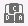

Описание функций
Встроенная удаленная консоль позволяет получить доступ к серверу, управлять им дистанционно, устанавливать ОС и устранять сбои в ее работе, а также устанавливать драйверы на сервер.
Посредством встроенной удаленной консоли можно:
- Использовать клавиатуру и мышь локального ПК для дистанционного управления сервером.
- Настроить удаленный доступ сервера к локальному ПК по сети с помощью FDD-диска или DVD-диска. Сервер использует виртуальный FDD-диск или виртуальный DVD-диск аналогично тому, как пользователь использует физическое USB-устройство.
Табл. 1 содержит описание значков на экране KVM.
Значок |
Описание |
|---|---|
|
Закрепление панели инструментов. |
|
Скрытие панели инструментов. |
|
Включение полноэкранного режима отображения рабочего стола сервера. ПРИМЕЧАНИЕ:
Плиточный дисплей не поддерживается. |
|
Отмена полноэкранного отображения рабочего стола сервера. |
|
Отображение меню управления энергопотреблением, которое включает следующие операции:
|
|
Настройка загрузочного устройства, с которого в первую очередь будет выполняться загрузка ОС. Настройка поддерживает следующие опции:
|
 |
Вывод на экран или настройка комбинации клавиш. Поддерживаются следующие комбинации клавиш:
ПРИМЕЧАНИЕ:
Комбинации клавиш и их функции различаются в зависимости от операционной системы. Комбинации клавиш и их функции, описанные здесь, предназначены только для Windows. |
|
Управление мышью сервера. К операциям управления относятся следующие операции:
Настройки по умолчанию: Ускорение мыши ПРИМЕЧАНИЕ:
|
|
Выбор и использование виртуального DVD-диска. ПРИМЕЧАНИЕ:
Виртуальный DVD-диск и виртуальный FDD-диск являются составными устройствами. Когда к серверу подключен виртуальный DVD-диск, сервер также идентифицирует виртуальный FDD-диск без носителя. Вы можете использовать виртуальный FDD-диск, следуя обычной процедуре. |
|
Выбор и использование виртуального дисковода гибких дисков. ПРИМЕЧАНИЕ:
Виртуальный DVD-диск и виртуальный FDD-диск являются составными устройствами. Когда к серверу подключен виртуальный FDD-диск, сервер также идентифицирует виртуальный DVD-диск без носителя. Вы можете использовать виртуальный DVD-диск, следуя обычной процедуре. |
|
Видеозапись операций, выполняемых на сервере. ПРИМЕЧАНИЕ:
Обратите внимание, что после включения функции видеозаписи может быть записана конфиденциальная служебная информация во время видеозаписи. |
|
Синхронизация клавиатуры клиента. По умолчанию BMC автоматически выбирает тип используемой клавиатуры клиента. Если автоматически выбранная клавиатура работает некорректно, пользователь может вручную настроить тип клавиатуры.
|
|
Вывод на экран справочной информации. |
|
Настройка четкости изображения рабочего стола сервера. |


Графический интерфейс пользователя (GUI)
Выберите в главном меню Удаленная консоль и нажмите Встроенная удаленная консоль HTML5 (приватная) или Встроенная удаленная консоль HTML5 (совместная).
Откроется экран KVM.

В случае выбора Встроенная удаленная консоль HTML5 (совместная) два пользователя смогут одновременно получить доступ к серверу и выполнять операции. Но данный режим несет определенные риски в плане безопасности, так как пользователи могут видеть операции друг друга.
Область |
Функция |
|---|---|
Панель инструментов |
Панель инструментов содержит значки, которые используются для удаленного управления сервером. |
Рабочий стол сервера |
Управление сервером в режиме реального времени с помощью клавиатуры или мыши локального ПК. |
Строка состояния |
Отображение в режиме реального времени подсказок и рекомендаций по использованию рабочего стола сервера, а также данных соединения между сервером и локальным ПК, IP-адреса и серийного номера сервера. |
Процедура
Включение сервера
- На панели инструментов экрана KVM нажмите
 и выберите в меню Включение.
и выберите в меню Включение. - Нажмите OK.
Сервер будет запущен.
Время запуска серверов разных конфигураций может отличаться.
Выключение сервера

- Перед выключением сервера убедитесь, что работа всех служб остановлена.
- Выберите режим выключения на основании фактических требований. Более подробная информация о режимах выключения сервера приводится в руководстве пользователя BMC ().
- На панели инструментов экрана KVM нажмите и выберите в меню Выключение или Принудительное выключение.
- Нажмите OK.
Сервер отключится.
Принудительный перезапуск сервера или принудительный перезапуск с отключением питания сервера
- Принудительный перезапуск или перезапуск с отключением питания может привести к прерыванию работы пользовательских программ или потере несохраненных данных.
- Перед выполнением принудительного перезапуска или перезапуска с отключением питания сервера необходимо убедиться, что данная операция не повлияет на работу системных служб.
- Выбор Принудительный перезапуск системы или Принудительный перезапуск с отключением питания осуществляется на основании фактических требований. Более подробная информация об отличиях двух режимов приводится в руководстве пользователя BMC ().
- На панели инструментов экрана KVM нажмите и выберите в меню Принудительный перезапуск системы или Принудительный перезапуск с отключением питания.
- Нажмите OK.
После этого произойдет перезапуск сервера или отключение сервера с последующим включением.
Длительность перезапуска серверов с разной конфигурацией может отличаться.
Настройка первого устройства для загрузки ОС
- На панели инструментов экрана KVM нажмите
 .
.На экране отобразятся опции настройки загрузочного устройства.
- Выберите требуемое загрузочное устройство.
Более подробная информация об опциях приводится в Табл. 1.
Вывод на экран комбинации клавиш
- На панели инструментов экрана KVM нажмите .
Откроется диалоговое окно с комбинацией клавиш.
- Нажмите комбинацию клавиш.
Сервер выполнит операцию, соответствующую данной комбинации клавиш.
Чтобы настроить необходимую комбинацию клавиш, укажите клавиши в текстовом Пользовательская настройка и нажмите Отправить.
Ускорение удаленной мыши
Ускорение мыши рабочего стола сервера используется для синхронизации ее работы с работой мыши локального ПК.
На панели инструментов экрана KVM нажмите  и выберите в меню Ускорение мыши.
и выберите в меню Ускорение мыши.
Работа мыши сервера будет синхронизирована с работой мыши локального ПК.
Функция «Одна мышь»
Функция «Одна мышь» используется для того, чтобы скрыть перемещения мыши локального ПК и отображать только перемещения мыши рабочего стола сервера, если работа мыши локального ПК не синхронизирована с работой мыши рабочего стола сервера.
На панели инструментов экрана KVM нажмите и выберите Одна мышь.
Сброс клавиатуры и мыши
Моделирование ситуации удаления и установки клавиатуры и мыши USB используется для восстановления работы клавиатуры и мыши на рабочем столе сервера, если они перестали функционировать.
На панели инструментов экрана KVM нажмите и выберите Сброс клавиатуры и мыши.
Произойдет сбор клавиатуры и мыши USB.
Настройка клавиатуры клиента
На панели инструментов экрана KVM нажмите  и выберите нужную клавиатуру.
и выберите нужную клавиатуру.
Подключение DVD-диска
Подключите DVD-диск локального ПК к серверу.
- На панели инструментов экрана KVM нажмите
 .
.
- Выберите Файл изображений.
- Нажмите
 .
.На экране локального ПК отобразится диалоговое окно Открыть.
- Выберите файл с расширением *.iso и нажмите Подключить.
Файл образа будет успешно загружен на сервер.
- Для загрузки другого файла образа нажмите Извлечение, выберите файл с расширением *.iso и нажмите Вставить.
- Для отключения DVD-диска нажмите Отключить.
Подключение файла
Подключение файла локального ПК к серверу требуется для того, чтобы с сервера можно было получать доступ к файлу в режиме «только для чтения».
- На панели инструментов экрана KVM нажмите .
- Выберите Локальный файл.
- Нажмите .
На экране локального ПК отобразится диалоговое окно Открыть.
- Выберите файл для подключения.
- Нажмите Вставить.
Файл ПК будет успешно подключен к серверу.
- После подключения файла откройте его в ОС сервера.
- Для отключения файла нажмите Отключить.
Загрузка файла образа с локального ПК посредством виртуального FDD-диска
Подключите FDD-диск локального ПК и загрузите с него файл образа на сервер.
- На панели инструментов экрана KVM нажмите
 .
.
- Нажмите .
На экране локального ПК отобразится диалоговое окно Открыть.
- Выберите файл с расширением *.img и нажмите Подключить.
- Нажмите Подключить.
Файл образа будет успешно подключен к серверу.
- Для загрузки другого файла образа нажмите Извлечение для смены FDD-диска, выберите другой диск и нажмите Вставить.
- Для отключения виртуального FDD-диска нажмите Отключить.
Видеозапись рабочего стола сервера
На удаленной виртуальной консоли можно просматривать видеозаписи операций, выполненных на рабочем столе сервера.
Обратите внимание, что после включения функции видеозаписи может быть записана конфиденциальная служебная информация во время видеозаписи.
- На панели инструментов экрана KVM нажмите
 .
.Запись начнется, когда значок изменится на
 .
. - Нажмите , чтобы остановить запись.
Видеофайл автоматически загрузится и сохранится на локальном ПК.
Видеофайл имеет расширение .rep. На странице Проигрывание видео можно воспроизвести видеофайл.